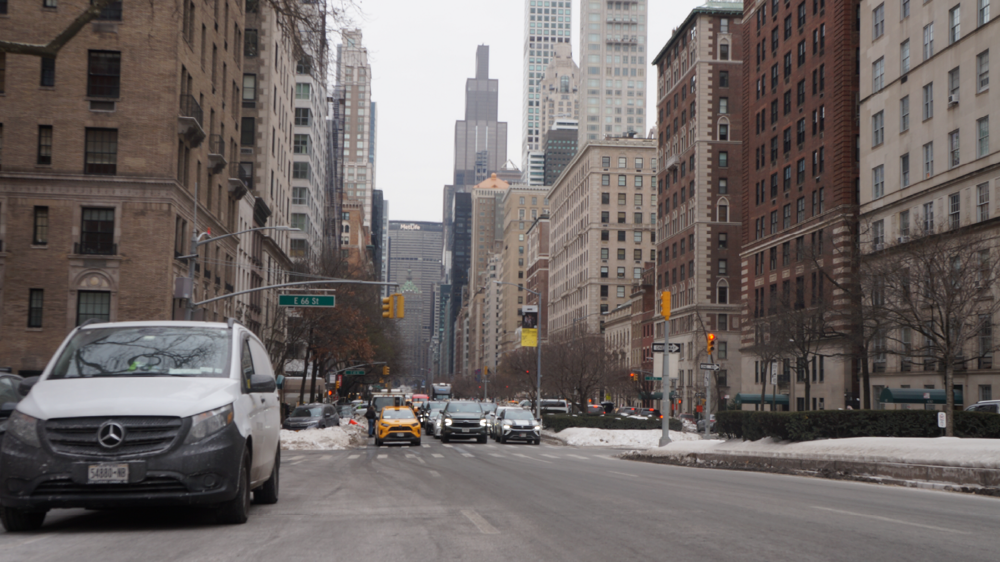

This is the illustrated environment. I made sure to include the skyline and trace over all the buildings in the background. The small squares near the front represent the other cars in the background. I was getting used to the adobe tools but I will improve on my skills as I continue to use these adobe illustrator tools.
Here is the original photo that I used for reference to trace over.

These are the layers I used for this project. I only needed two to trace over the original image.